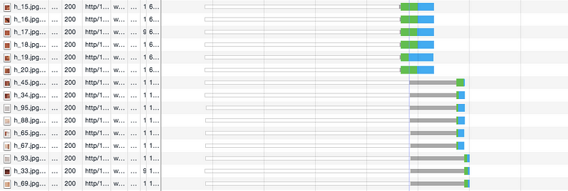
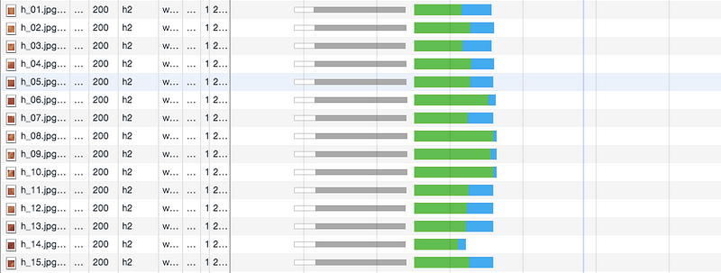

Today I was looking at what I want to write about in the coming year,
and while checking out custom element micro-frameworks came across import.meta.resolve
in the documentation for the Ponys micro-framework.
That one simple trick is part of the essential toolbox that allows skipping build-time bundling,
unlocking the vanilla web development achievement in the browser.
We need this toolbox because the build-time bundler does a lot of work for us:
- Combining JS and CSS files to avoid slow page loads.
- Resolving paths to the JS and CSS dependencies so we can have clean import statements.
- Optimizing the bundled code, by stripping out whitespace, and removing unused imports thanks to a tree shaking algorithm.
It is not immediately apparent how to get these benefits without using a bundler.
Combining JS and CSS files
A typical framework-based web project contains hundreds or thousands of files. Having all those files loaded separately on a page load would be intolerably slow, hence the need for a bundler to reduce the file count. Even by stripping away third party dependencies we can still end up with dozens or hundreds of files constituting a vanilla web project.
When inspecting a page load in the browser's developer tools, we would then expect to see a lot of this:
The browser would download 6 files at a time and the later requests would block until those files downloaded. This limitation of HTTP/1 let to not just the solution of bundlers to reduce file count, but because the limitation of 6 parallel downloads was per domain it also led to the popularity of CDN networks which allowed cheating and downloading 12 files at once instead of 6.
However. It's 2025. What you're likely to see in this modern era is more like this:
Because almost all web servers have shifted over to HTTP/2, which no longer has this limitation of only having 6 files in flight at a time, we now see that all the files that are requested in parallel get downloaded in parallel. There's still a small caveat on lossy connections called head-of-line-blocking, fixed in HTTP/3, which is presently starting to roll out to web servers across the internet.
But the long and short of it is this: requesting a lot of files all at once just isn't that big of a problem anymore. We don't need to bundle up the files in a vanilla web project until the file counts get ridiculous.
Resolving paths
Another thing that bundlers do is resolving relative paths pointing to imported JS and CSS files. See, for example, the elegance of CSS modules for importing styles into a react component from a relative path:
However. It's 2025. And our browsers now have a modern vanilla toolbox for importing.
When we bootstrap our JS with the magic incantation <script src="index.js" type="module"></script>
we unlock the magic ability to import JS files using ES module import notation:
Inside of such files we also get access to import.meta.url, the URL of the current JS file,
and import.meta.resolve(), a function that resolves a path relative to the current file,
even a path to a CSS file:
While not quite the same as what the bundler does, it still enables accessing any file by its relative path, and that in turn allows organizing projects in whatever way we want, for example in a feature-based folder organization. All without needing a build step.
This ability to do relative imports can be super-charged by import maps, which decouple the name of what is imported from the path of the file it is imported from, again all without involving a build step.
Optimizing bundled code
Another thing bundlers can do is optimizing the bundled code, by splitting the payload into things loaded initially, and things loaded later on lazily. And also by minifying it, stripping away unnecessary whitespace and comments so it will load faster.
However. It's 2025. We can transparently enable gzip or brotli compression on the server, and as it turns out that gets almost all the benefit of minifying. While minifying is nice, gzipping is what we really want, and we can get that without a build step.
And lazy loading, that works fine using dynamic import, and with a bit due diligence we can put some of the code behind such an import statement. I wrote before how React's lazy and suspense can be ported easily to vanilla web components.
Happy new year!
Great news! It's 2025, and the browser landscape is looking better than ever. It gives us enough tools that for many web projects we can drop the bundler and do just fine. You wouldn't believe it based on what the mainstream frameworks are doing though. Maybe 2025 is the year we finally see a wide recognition of just how powerful the browser platform has gotten, and a return to old school simplicity in web development practice, away from all those complicated build steps. It's my new year's resolve to do my part in spreading the word.